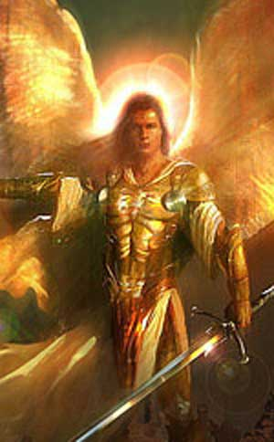
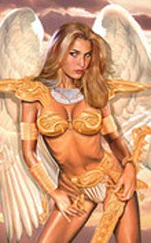
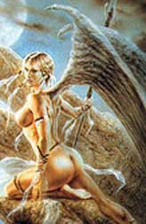

Aesimar
Gli Aesimar rappresentano la progenie di una creatura angelica extraplanare ed una creatura mortale (nella stragrande maggioranza dei casi di umana). In queste creature, dunque, scorre parte di sangue angelico anche se in misura non predominante. Per questo motivo gli Aesimar possono essere considerate creature planari (plane-touched). Generalmente appaiono come bellissimi gloriosi umani con capelli dorati, pelle vellutata ed occhi penetranti. Puri di cuore e coraggiosi, la loro nobiltà d'animo e bontà d'animo è leggendaria; ma essendo comunque resi impuri dal sangue mortale di uno dei loro genitori costoro non sono perfetti. L'indole mortale porta alcuni di loro ad essere caparbi, altri eccessivamente orgogliosi, altri ancora irrispettosi delle leggi dei mortali od infine vendicativi. Gli Aesimar sono lasciati alle cure del genitore mortale e sono destinati a crescere nel Primo Piano Materiale, i loro genitori celestiali, però, raramente li abbandonano completamente cercando di guidarli con la loro mano, anche se invisibile, verso quello che costoro ritengono essere la "corretta via". Rispettati dai fedeli della Fratellanza della Luce e dai ministri di questi culti possono divenire importanti eroi e comandanti nella società anche se la loro natura parzialmente celestiale li porta comunque ad essere isolati e considerati "diversi". Sono, invece, osteggiati, temuti e combattuti dai fedeli e dai ministri dei culti delle Forze Oscure, i quali ultimi bramano di sacrificare queste creature semi-angeliche alle loro malvagie divinità per donare loro un'ingente quantitativo di potere divino diretto ed ottenerne quindi i favori.

Limiti
di classe per la razza:
Paladin (Tanatos, Loky) 14° livello
Cleric (Tanatos, Loky) 14° livello
Fighter 13° livello
Wizard 10° livello
Cantore di Arelia
9° livello
Possibilità di multi-classe (non possono divenire dual-class):
Fighter/Cleric
Allineamenti consentiti:
Qualsiasi Good
Categorie di età :
Base Age 16 + 1d6
Childhood
1-16 years
Adolescence
17-22 years
Adulthood
23-61 years
Middle Age* 62-82 years
Old Age**
83-124 years
Venerable Age***
125+ years
Maximum
Age 125
+ 2d20 years
Dimensioni e peso :
Sono alti 159 (femmine 149) +
costituzione + 1d20 cm. e
pesano 59 (femmine 49) + costituzione + 1d10 kg.
Punteggi di Abilità :
Bonus: +1
a saggezza, +1
a carisma
Malus: -1 a
costituzione
Inoltre i limiti minimi e massimi sono i seguenti :
|
Abilità |
Punteggio Minimo
Razziale |
Punteggio Massimo
Razziale |
|
Forza |
8 |
18 |
|
Intelligenza |
11 |
18 |
|
Saggezza |
11 |
1 |
|
Costituzione |
5 |
18 |
|
Carisma |
13 |
18 |
|
Destrezza |
5 |
18 |

Caratteristiche
speciali generali:
Si tratta delle caratteristiche speciali che sono comuni a tutti gli Aesimar.
Infravisione: Gli Aesimar hanno un'infravisione di 18 metri.
Sesto Senso: Gli Aesimar hanno un bonus di +1 a tutti i tiri sulla sorpresa.
Mente Superiore: Gli Aesimar hanno un bonus di +2 su tutti i tiri salvezza contro paura e contro ogni forma di incantesimi mentali od effetti magici che provino a manipolare la loro mente.
Caratteristiche
speciali particolari:
Il sangue celestiale che scorre nelle vene degli Aesimar, oltre alle
caratteristiche generali comuni a tutte queste creature, dona loro alcune
caratteristiche particolari eredità diretta della loro natura semi-angelica.
Poiché l'ammontare di sangue celestiale non è sempre lo stesso non tutti gli
Aesimar posseggono lo stesso numero e tipo di caratteristiche speciali
particolari. Tutti gli Aesimar possono tirare un 1d20 per determinare quale tra
le seguenti caratteristiche speciali particolari posseggono. Oltre alla
caratteristica speciale particolare base,
spendendo 3 punti creazione
i personaggi Aesimar potranno
ottenere una di queste caratteristiche supplementare (sempre selezionata a
caso attraverso il lancio di 1d20). Gli Aesimar possono possedere al massimo tre
delle seguenti caratteristiche speciali particolari (possono essere quindi spesi
in questo modo al massimo 6 punti creazione).
1-2) Creatura Alata: Gli Aesimar posseggono delle ali piumate bianche e possono, oltre a muoversi camminando (fattore movimento 12), volare a fattore movimento 12 (manovrabilità B). Non possono però prendere il volo anche se sono solo leggermente ingombrati. Inoltre la caratteristica del loro volo non permette loro di utilizzare efficacemente armi da tiro.
3) Resistenza alla Magia: Gli Aesimar hanno una Resistenza alla Magia innata pari al 10 % + 1 % per livello di esperienza (essendo naturale, quindi, costoro possono con il solo pensiero, non conta azione ma va dichiarata nella fase delle intenzioni, annullarla completamente per l’intero round in questione). Normalmente la resistenza è, invece, sempre attiva e quindi non può essere annullata qualora l'Aesimar non sia in grado di pensare correttamente, ad esempio quando è in coma, dorme, ecc…).
4) Aura Celestiale: Gli Aesimar irradiano un'invisibile aura celestiale di puro bene divino. Questa aura che circonda la creatura si estende per 3 metri intorno a lui. Questa potente aura di bene disturba tutti gli esseri di indole malvagia (evil) imponendogli un – 1 ai tiri per colpire fino a che restano vicino all'Aesimar. Queste creature capiscono immediatamente che la fonte dell’aura di vibrazioni benefiche è l'Aesimar e potrebbero quindi reagire contro di lui. Si noti che qualora l'Aesimar sia di una classe di paladini che già possiede una simile aura, occorrerà ripetere il tiro ignorando questo risultato.
5) Irradiare la Sacra Luce: Gli Aesimar possono diffondere luce sacra nelle prossimità della loro persona. Attivare questo potere si considera un'azione complessa con un fattore iniziativa pari a +3, ma non è richiesto l'uso di componenti né vocali né somatici (essendo un potere attivabile mentalmente è sufficiente che l'Aesimar sia cosciente e consapevole) e neanche la concentrazione. Quando attivano questo potere dalla loro persona si irradia una calda luce dorata che illumina in un raggio di 18 metri e si considera a tutti gli effetti come luce del pieno giorno (continual light). Gli Aesimar possono attivare questo potere solo una volta ogni 24 ore e possono mantenere la luce una volta attivata per un periodo massimo di round pari al triplo del loro punteggio di costituzione. In ogni caso, alla fine di ogni round (come free action), gli Aesimar possono annullare gli effetti della luce da loro irradiata.
6) Irradiare Energia Positiva:
Gli Aesimar possono irradiare energia positiva nelle prossimità della loro
persona. Attivare questo potere si considera un'azione complessa con un fattore
iniziativa pari a +4 che richiede concentrazione e l'uso di componenti
esclusivamente somatici (la creatura prima si stringerà in sé per poi espandere
il proprio corpo proteso verso l'esterno). Quando attivano questo potere dalla
loro persona si irradia un'onda di luce dorata carica di energia positiva che si
estende in un raggio di 6 metri dall'Aesimar. Tutte le creature la cui esistenza
si basa sull'energia negativa (come i non morti) che sono colpiti dall'onda di
energia positiva subiscono
4 danni da energia positiva + 1
danno per livello di
esperienza dell'Aesimar. Gli Aesimar possono attivare questo potere solo
una volta al giorno ogni 3 livelli di esperienza (1 volta dal 1° al 3° livello,
2 volte dal 4° al 6° livello, ecc...). Il potere viene interamente recuperato ad
ogni sorgere del sole.
7) Riduzione dei Danni: Gli
Aesimar hanno una particolare resistenza
ai danni comuni e riducono i primi 5 danni subiti da ogni singolo colpo inferto.
I danni provocati dalla magia o dalle armi magiche che siano almeno +1 nonché
dagli attacchi fisici ad esse equivalenti non sono in alcun modo ridotti.
8-9) Resistenza al Freddo:
Gli Aesimar riducono tutti i danni da freddo che subiscono della metà.
10-11) Resistenza alle Fiamme:
Gli Aesimar riducono tutti
i danni da fuoco e da calore che subiscono della metà.
12) Resistenza ai Risucchi di Energia Vitale: L'energia vitale degli Aesimar è particolarmente difficile da essere risucchiata, ogni volta che costoro subiscono un effetto di risucchio (derivante da qualunque fonte) costoro potranno effettuare un tiro salvezza contro raggio della morte per evitarne completamente gli effetti. Si noti che se l'effetto dipende dall'attacco di una creatura questo tiro salvezza sarà modificato dalla differenza di livello tra la creatura e l'Aesimar.
13) Tocco Guarente: Gli Aesimar hanno il potere di guarire tramite il tocco delle mani, si tratta di un'azione complessa che richiede componenti somatici ma non la concentrazione ed ha una durata (casting time) pari ad 1 round. Il tocco cura fino a 5 punti ferita di danno. L'Aesimar può utilizzare questo potere una volta al giorno. Il potere viene interamente recuperato ad ogni sorgere del sole.
14-16) Tiri Salvezza Superiori:
Gli Aesimar hanno tiri salvezza superiori ottenendo un
bonus di +2,
per determinare quale tipologia di tiri salvezza sono superiori tirare 1d6 e
consultare la seguente tabella:
1 Raggio della Morte
2 Veleno
3 Paralisi
4 Bacchette, Bastoni e Verghe Magiche
5 Incantesimi (non si cumula con il bonus generale per gli incantesimi mentali)
6 A scelta del personaggio fra quelli su menzionati.
Si noti che qualora l'Aesimar abbia più di un potere speciale particolare questo
beneficio può essere sorteggiato più di una volta ma si ritirerà il dado da 6
qualora esca la medesima tipologia di tiri salvezza.
18-20) Poteri Magici Innati:
Gli Aesimar dispongono di poteri magici innati potendo lanciare, una volta al
giorno, una magia determinata a caso nella seguente tabella tirando 1d12. Si
noti che l'Aesimar
dovrà lanciare normalmente la magia ma potrà farlo anche indossando corazze
(necessita, però, di entrambe le mani libere) e senza l'uso di componenti
materiali (inoltre non dovrà effettuare il tiro per lo special cast). Gli
incantesimi si considerano lanciati ad un livello pari a quello di esperienza
del personaggio. Tutti i poteri magici innati sono interamente recuperati ad
ogni sorgere del sole. Lista dei poteri magici innati:
1 Detect Evil (Cleric,
1° livello di potere)
2 Protection from Evil (Cleric, 1° livello di potere)
3 Positive Weapon (Cleric - Speciale di Tanatos, 2° livello di potere)
4 Call Upon Faith (Cleric, 1° livello di potere)
5 Cure Light Wounds (Cleric, 1° livello di potere)
6 Aid (Cleric, 2° livello di potere)
7 Minor Absorber Shield (Wizard - Abjuration, 1° livello di potere)
8 Barrier of Force (Wizard - Abjuration, 1° livello di potere)
9 Magic Motes (Wizard - Evocation Radiance, 1° livello di potere)
10
Alpha's Sparkle
Beam (Wizard
- Evocation
Radiance, 1° livello di potere)
11 Sinkros Sun Bolts
(Wizard
- Evocation
Radiance, 3° livello di potere)
12 A scelta
del personaggio fra quelli su menzionati.
Si noti che
qualora l'Aesimar abbia più di un potere speciale particolare questo beneficio
può essere sorteggiato più di una volta ma si ritirerà il dado da 12 qualora
esca lo stesso incantesimo (ad eccezione del risultato di 12 che può essere
ripetuto).

Caratteristiche fisiche
particolari:
La natura celestiale degli Aesimar si riflette anche sul loro aspetto fisico. Si
tiri 1d10 per determinare quali particolarità fisiche possiede il personaggio
consultando la seguente tabella:
1 Pelle
dorata
2 Pelle argentata
3 Occhi bianchi luminescenti (visibili di notte)
4 Denti bianchi perfetti (+1 prove di Appearance)
5 Unghia dorate
6 Unghia argentate
7 Iride di color cristallo-blu
8 Capelli e sopracciglia bianche
9 A scelta del personaggio.
10
Tirare due volte
sulla presente tabella ignorando ogni risultato superiore al 9.
Gli Aesimar devono raggiungere un ammontare di punti esperienza pari al
150% di quelli che dovrebbero normalmente raggiungere per la classe
da loro scelta.